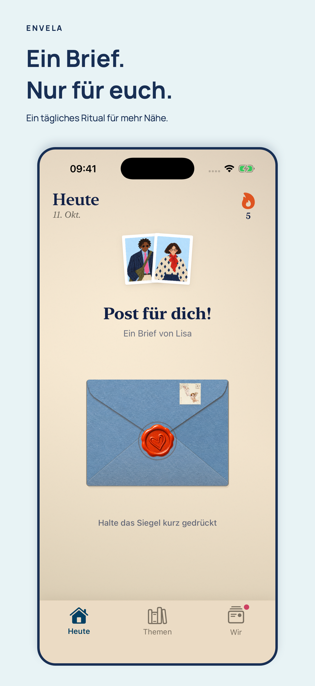
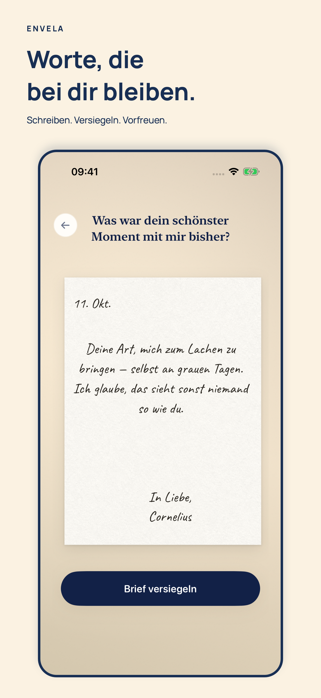
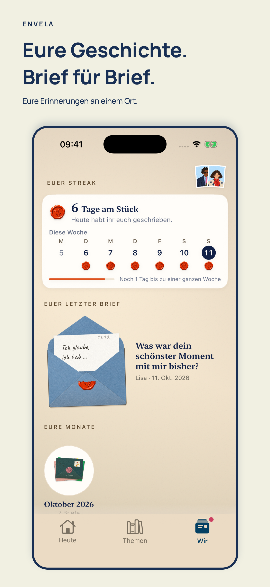
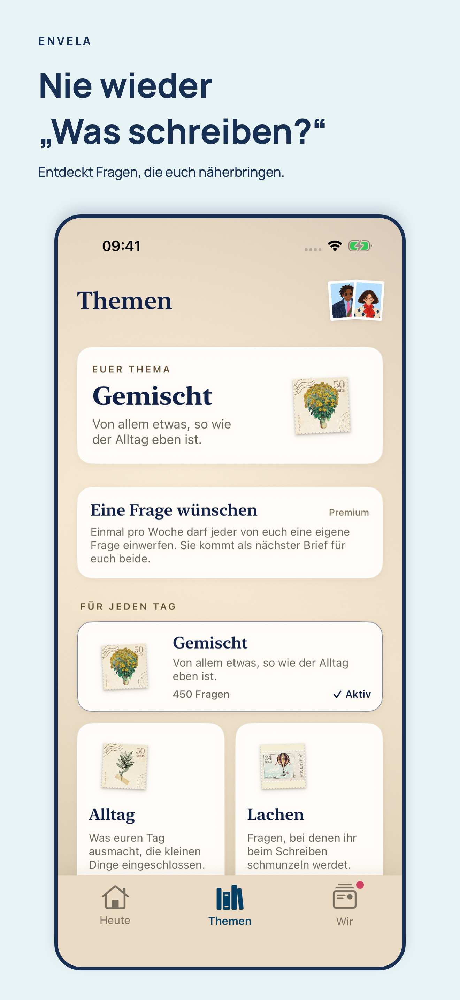
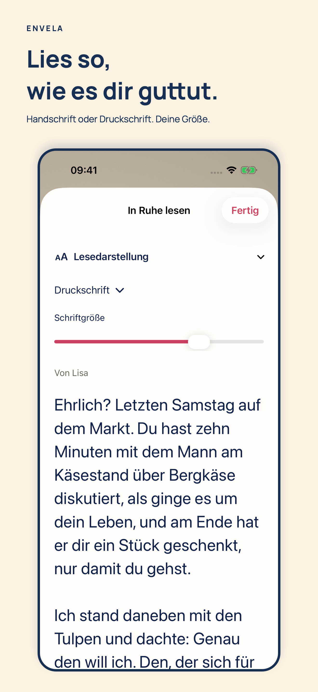
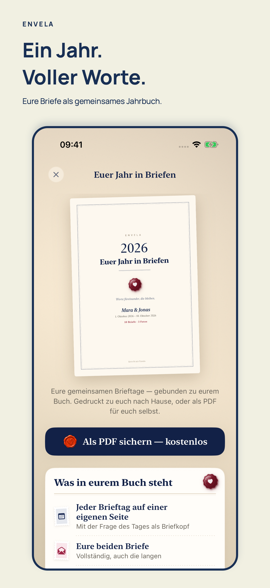

Envela · Materialien für die App-Store-Redaktion · Oktober 2026
Ein täglicher Brief füreinander.
Eine Frage, zwei persönliche Antworten und ein bewusster Moment zu zweit. Envela verbindet das tägliche Schreiben mit Papier, Handschrift und einem Wachssiegel.
Fokus: deutschsprachige Paare in Deutschland, Österreich und der Schweiz.
Die Aufnahmen zeigen die tatsächliche App mit fiktiven Beispieldaten. Die neue Lesedarstellung ist Bestandteil eines geplanten Updates; die Materialien zeigen den Entwicklungsstand vom 11. Oktober 2026.
Vom ersten Moment bis zum geöffneten Brief
Die echte Startanimation, das Falten und Schließen des Umschlags mit Wachssiegel und das anschließende Öffnen des Briefs – direkt in Envela aufgenommen.
20 Sekunden · ohne Ton · kompakte Webversion · Video in voller Auflösung herunterladen
Start: Briefschwarm im bewussten Stop-Motion-Stil. Danach: Papier falten, Umschlag schließen und versiegeln. Zum Schluss: Siegel brechen, Brief herausziehen und lesen. Die Szenen wurden aus echten App-Aufnahmen geschnitten; das Schlussbild bleibt zum Lesen stehen.
Sechs Einblicke in Envela
Die Bilder öffnen sich in voller Auflösung: 1320 × 2868 Pixel.











